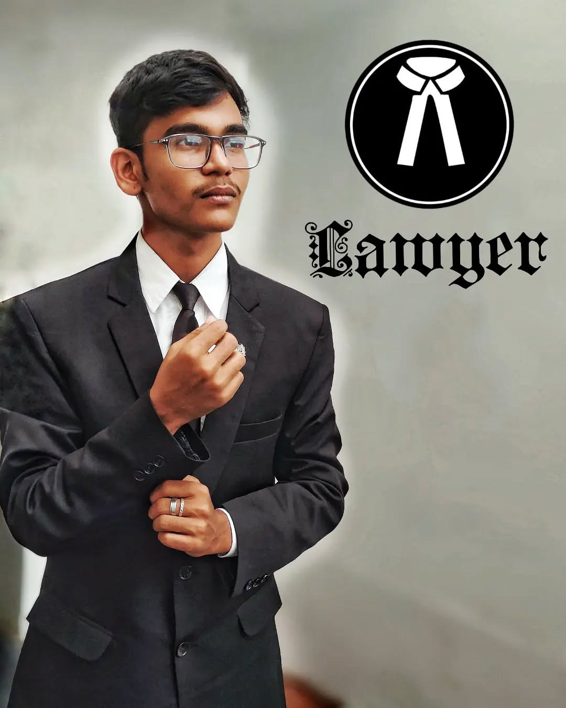

BA LL.B. (Hons.)Vinayaka Mission's Law School
LAW × TECHNOLOGY × AI × DESIGN
INDEPENDENT THINKER. LIFELONG LEARNER.
SIVA PRASANTH
S I V A T I M E
Where Law Meets Technology.
A law student exploring the intersection of legal systems, emerging technologies and artificial intelligence — with curiosity, creativity and a builder's mindset.
SCROLL TO EXPLORE
⚖
JUSTICE · INNOVATION · IMPACT
SYSTEM / 001● LIVE EXPLORATION
LAW+TECH+AI
AI & LEGAL SYSTEMSResearch / Design / Future
EXPLORING NEW POSSIBILITIES
SIVA TIMEEST. IN CURIOSITYCHENNAI · INDIA
01 / 09AN OPEN MIND FOR A CHANGING WORLDSCROLL ↓
Student LeadershipStudent Council · Campus initiatives
Legal ResearchPolicy · Reform · Technology
Tech & AI ExplorationDigital tools · Creative workflows
Creative PracticeDesign · Video · Photography
THE PERSON
Curiosity is my compass.
One discipline teaches me to question. Another teaches me to build.
A LITTLE ABOUT ME
I’m Siva Prasanth — a law student with an interest in how technology can make knowledge, systems and opportunities more accessible.
My journey brings together legal education, research, student leadership and creative digital work. I enjoy learning across disciplines and turning ideas into practical projects.
Start a conversation ↗PROFILE / 001

Siva Prasanth
Law · Technology · AI · Design
EDUCATIONBA LL.B. (Hons.)
INSTITUTIONVMLS, Chennai
PERSONAL BRANDSIVA TIME
WORKING PRINCIPLELearn. Build. Improve.
Legal
Grounded in law. Open to change.
Exploring the law not only as a set of rules, but as a living framework that shapes society.
§
Legal Research
Researching statutory frameworks, case law and contemporary legal questions with an emphasis on clear analysis.
RESEARCH / ANALYSIS⚖
Indian Law
Academic interests include land laws, competition law, insolvency, constitutional principles and access to justice.
INDIAN LEGAL SYSTEM⌁
Legal Communication
Turning complex legal topics into structured notes, presentations, research writing and accessible explanations.
WRITING / PRESENTATIONAREAS I'VE EXPLOREDConstitutional LawLand LawsCompetition LawIBCBNSSIP & Digital AgeAccess to Justice
Tech & AI
Technology is a tool for possibility.
Learning, experimenting and using digital tools to make ideas useful.
SIVA TIME / AI LABNot just using technology.
Not just using technology.
Thinking with it.
I explore practical applications of AI and digital tools across research, productivity, content creation and the way people interact with information.
AI-assisted researchDigital workflowsWeb experimentsCreative toolsAutomation concepts
// A multidisciplinary learning loop
01 QUESTION Understand the problem
02 RESEARCH Find context and evidence
03 EXPERIMENT Use tools, test ideas
04 CREATE Build something useful
OUTPUT > Better questions. Clearer thinking. Practical work._
Project
Ideas in motion.
A growing collection of academic, digital and creative work.
LEGAL RESEARCH / 01
§
LAW / SOCIETY / SYSTEMSACADEMIC RESEARCH
Law, Policy & Society
Research and presentation work exploring Indian legal frameworks, statutory interpretation and contemporary social questions.
↗AI / 02
AI
HUMAN IDEAS · MACHINE ASSISTANCEEXPERIMENTS
AI & Digital Workflows
Exploring how AI tools can support research, content and everyday productivity.
↗CREATIVE / 03
VISUALS / STORIES / DESIGN
CREATIVE PRACTICE
Design & Content
Visual communication, editing and creative content for ideas, events and personal projects.
↗Selected themes are presented here; individual project case studies can be added as they are published.
Experience
Learning beyond the classroom.
Every experience adds a new perspective — through people, practice and participation.
ACADEMIC JOURNEY
EDUCATION
Vinayaka Mission's Law School
BA LL.B. (Hons.) — legal education, academic research, presentations and campus engagement.
Chennai, Tamil NaduSTUDENT LEADERSHIP
LEADERSHIP & SERVICE
Student Council & Campus Activities
Contributed to student initiatives, sports and cultural activities, event coordination and campus life.
VMLSINTERNSHIP EXPERIENCE
PROFESSIONAL EXPOSURE
Legal & Corporate Environments
Internship experiences that provided exposure to professional work, observation, communication and practical learning.
Details available on requestCOMMUNITY ENGAGEMENT
OUTREACH
Social Awareness & Volunteering
Participated in community outreach and awareness initiatives, including legal and social development activities.
Tamil NaduJournal
A mind that keeps asking.
Topics, questions and observations worth exploring.
ContactHave an idea?
Have an idea?
Let's make it matter.
Open to meaningful conversations, collaborations, learning opportunities and projects at the intersection of law and technology.
SIVA TIMEWHERE LAW MEETS TECHNOLOGY.